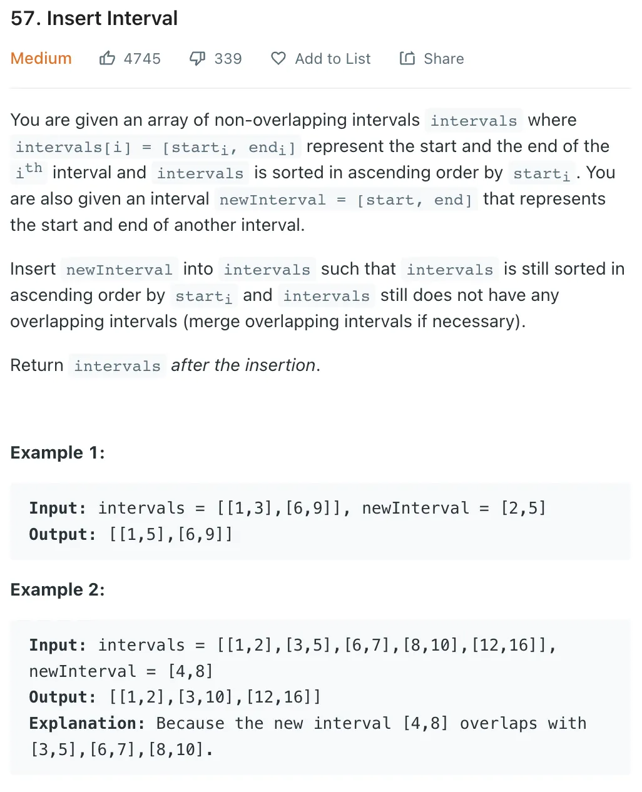

57. Insert Interval
考過的公司：Google
Question

✍🏽 My Solution
Runtime: 0 ms, faster than 100.00% of Java online submissions for Insert Interval.
Memory Usage: 44.7 MB, less than 83.05% of Java online submissions for Insert Interval.
class Solution {
public int[][] insert(int[][] intervals, int[] newInterval) {
ArrayList<int[]> res = new ArrayList<>();
int i = 0;
int len = intervals.length;
// 左邊不重疊的區間
while (i < len && intervals[i][1] < newInterval[0]) {
res.add(intervals[i]);
i++;
}
// 遍歷有重疊的區間
while (i < len && intervals[i][0] <= newInterval[1]) {
newInterval[0] = Math.min(intervals[i][0], newInterval[0]);
newInterval[1] = Math.max(intervals[i][1], newInterval[1]);
i++;
}
res.add(newInterval); // 循环结束后，为合并后的区间，推入res
// 右邊沒有重疊的區間
while (i < len && intervals[i][1] >= newInterval[1]) {
res.add(intervals[i]);
i++;
}
int[][] resArray = new int[res.size()][];
for (i = 0; i < resArray.length; i++) {
resArray[i] = res.get(i);
}
return resArray;
}
}
🧠 Thought Process
- Why did I choose this particular implementation?
- **「手画图解」57. 插入区间 圖片思路好理解**
- 不重叠，需满足：绿区间的右端，位于蓝区间的左端的左边，如[1,2]。
- 则当前绿区间，推入 res 数组，指针 +1，考察下一个绿区间。
- 循环结束时，当前绿区间的屁股，就没落在蓝区间之前，有重叠了，如[3,5]。
- 现在看重叠的。我们反过来想，没重叠，就要满足：绿区间的左端，落在蓝区间的屁股的后面，反之就有重叠：绿区间的左端 <= 蓝区间的右端，极端的例子就是[8,10]。
- 和蓝有重叠的区间，会合并成一个区间：左端取蓝绿左端的较小者，右端取蓝绿右端的较大者，不断更新给蓝区间。
- 循环结束时，将蓝区间（它是合并后的新区间）推入 res 数组。 剩下的，都在蓝区间右边，不重叠。不用额外判断，依次推入 res 数组。